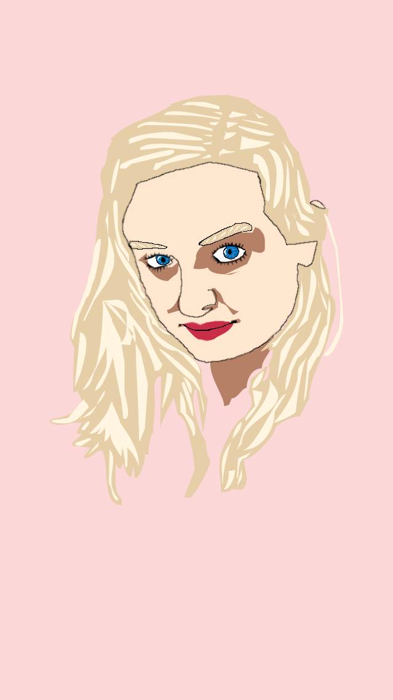
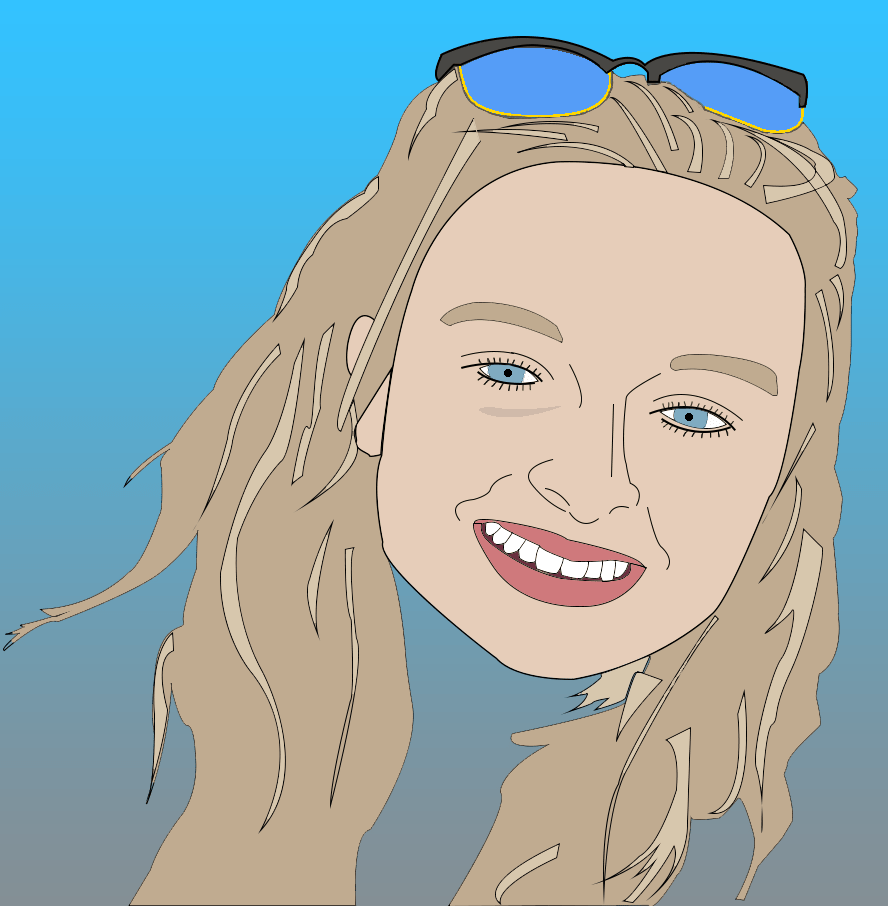
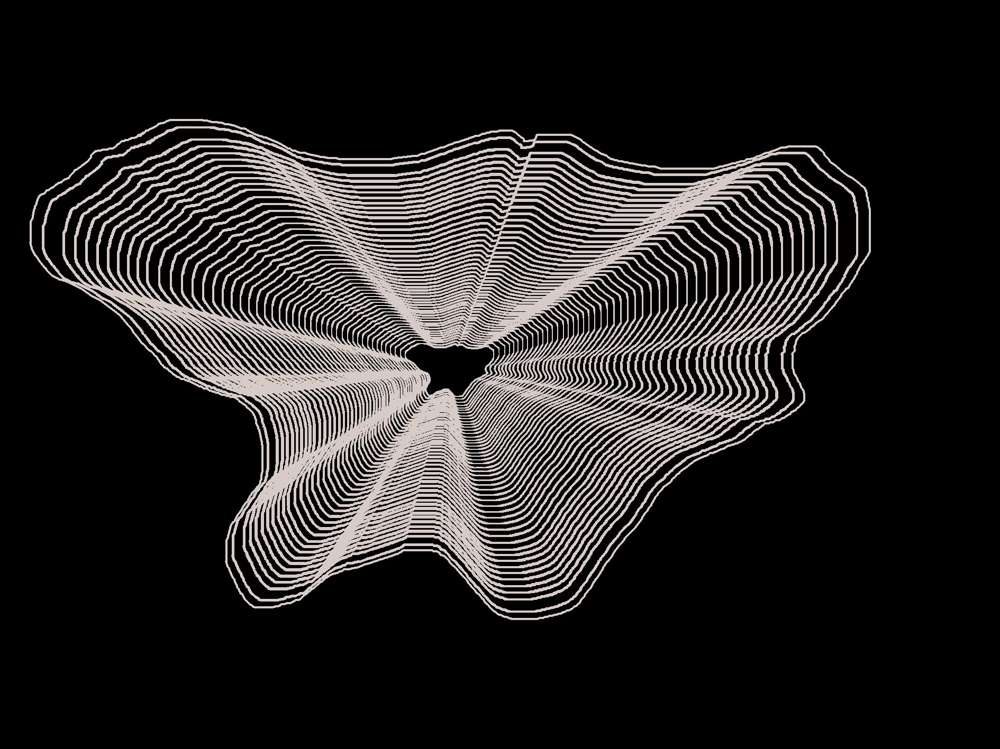

Yeah, just a bit o' PS
16/03/17
As I've been building this website, I seem to have inherited
a much larger appetite for creation; a need to satiate a
deep hunger for "making stuff".
So, natuarally, I turned to photoshop. Now, photoshop
is a bit of software that I've always fancied getting myself
accquainted with (to anyone feeling the same way; do it).
However, It's something I've never taken the necessary time
out for. Until now obviously.
I decided a fun first project would be just trying to
"cartoonise" a photo of someone, that lucky someone being
my girlfriend Rachel (I'm sure she'll be super pleased this
is getting uploaded).

This first attempt was a little rough as I hadn't yet
become accquainted with any of the tools really.
So I tried again. And I'd discovered the pen tool (and
the fill bucket... took a while I know).

I feel this one came out a lot better, although I'm
pretty pleased with the pair considering these were my first
two times ever even opening photoshop.
The next time I wanted to change it up a bit, and I
wanted to get something made in a relatively short time.
This is what I came up with:

I got the inspiration from Daniel Eden and his generative art. My process for creating this involved
no such loveliness however. It was simple a doodle drawn
with the brush tool and then 50 layers of the same shape,
each layer 4% smaller than the previous. Not especially
fun, but a nice, trippy, light-speed, tunnel-esque result.
Thanks for reading.
|